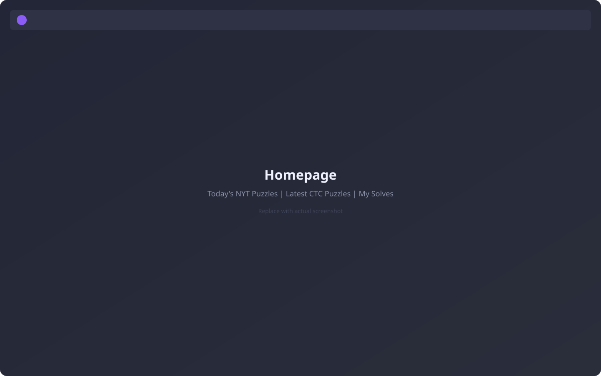
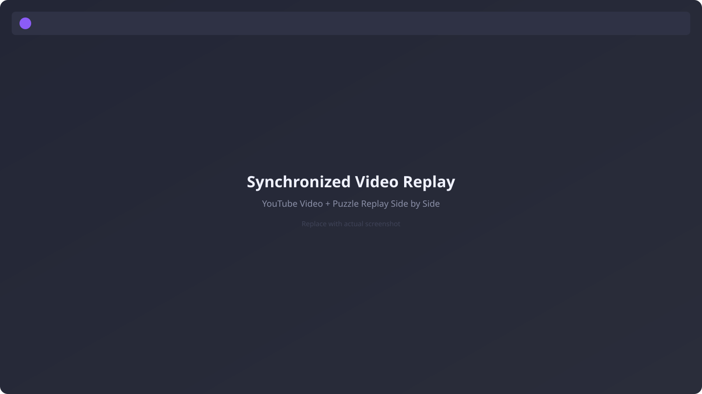
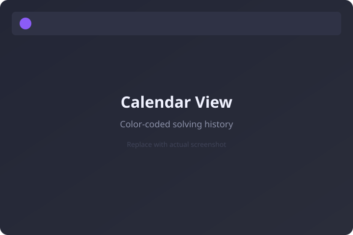
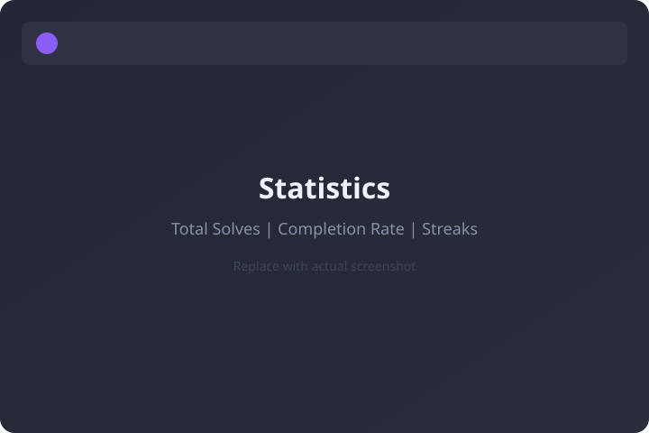

Solve, Sync, and Relive Every Puzzle
Solve puzzles on SudokuPad, sync your progress to Launchpad, and watch your replays alongside your favorite YouTube creators.

Everything You Need In One Place
From synchronized video replays to cross-device puzzle syncing, Sudoku Launchpad has the tools to make every solve count.
SudokuPad Sync
Sync your puzzles from SudokuPad with the Chrome extension, or manually export and upload into Launchpad.
Puzzle Library
All your solves, organized in one place. Multiple attempts on the same puzzle each get their own replay record.
Solve Replays
Play back any synced puzzle like a video. Watch your solve unfold move-by-move with full playback controls.
YouTube Integration
Browse puzzles featured by Cracking The Cryptic and other top YouTube creators. Track which puzzles you've solved across every channel.
Synchronized Video Replay
Watch your solve replay alongside the YouTube video. Replay speed adjusts so you finish together — seek and play/pause stay in lockstep.
Calendar Views
See your solving history at a glance. Color-coded calendars show which puzzles you've solved and which ones you still need to tackle.
How It Works
Get started in three simple steps.
Solve
Browse puzzles from YouTube and beyond, then launch directly into SudokuPad to solve.
Sync
Sync your puzzles from SudokuPad with the Chrome extension, or upload your replay exports manually.
Relive
Play back your solves move-by-move, or watch them synchronized alongside the YouTube video.
See It In Action
A closer look at the features that make Sudoku Launchpad your go-to solving companion.

Synchronized Video Replay
Calendar View
Statistics & TrackingBuilt on What We Love
I'm grateful for this community. Sudoku Launchpad is my way of giving back.
SudokuPad
None of this would exist without SudokuPad, the incredible puzzle solving platform built by our favorite developer, Sven Neumann. His work and innovation have given all of us a place to build, solve, and fall in love with puzzles. Sudoku Launchpad is meant to be a companion to that already delightful experience.
Puzzle Constructors
Behind every puzzle on this platform is a human being who handcrafted it — not a computer, but a person who carefully designed a logical journey with moments of surprise, beauty, and that incredible feeling when everything clicks. The variant sudoku community is home to some of the most creative minds you'll encounter anywhere, and they share their work generously with all of us. Sudoku Launchpad is one small way to give these setters and their craft more of the spotlight they deserve.
Cracking The Cryptic
If you haven't discovered Cracking The Cryptic yet, you're in for a treat. Mark and Simon have built something rare — a channel where two world-class solvers work through handcrafted puzzles with genuine wonder, celebrating the ingenuity of every setter along the way. They've turned millions of people on to variant sudoku, revealing an entire art form that most of us never knew existed behind a simple grid of numbers.
There's a wonderful feeling watching your replay alongside one of their solves and seeing the same deduction land at the exact same moment. That's a joy I want everyone to experience.
Community Driven
I build apps like this because I want to use them myself, but the ultimate joy comes from all of you using it. Your feedback and ideas directly influence what gets built next, so find me over on Discord and let's build this thing together!
Disclaimer: I used AI to help me find the right words for this page — I'm much better with code than prose. Every sentiment here is mine, carefully prompted, re-prompted, and hand tweaked until it said exactly what I meant.
In fact, it was written by Claude Opus 4.6. I'm sure we all have mixed emotions about its Puzzle Constructors section above — I made it "think" hard and research that one, before I realized the irony of it. Did I use that correctly? Like I said, I'm bad with words (this part is written by me).
Claude Code Opus 4.6 helped write most of the app as well — it knows its way around a web application much better than a variant sudoku construction.
P.S. — If you couldn't tell, it LOVES using em dashes — the things that are surrounding these words — so that's always a solid tell something was written by AI. —
Ready to Level Up Your Sudoku?
Join Sudoku Launchpad and never lose track of a puzzle again.